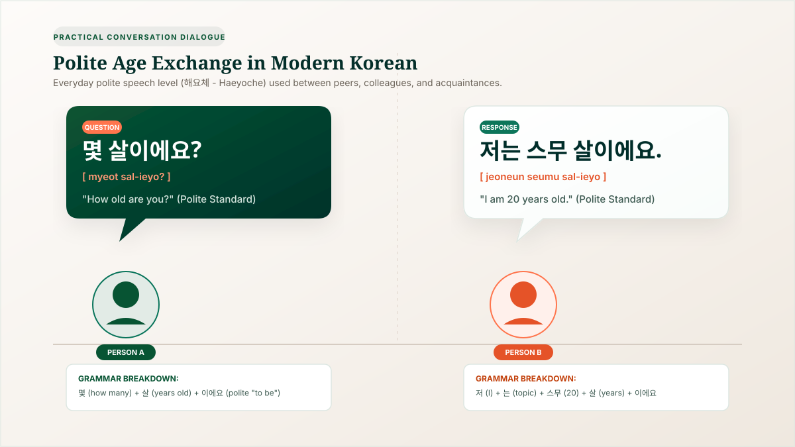
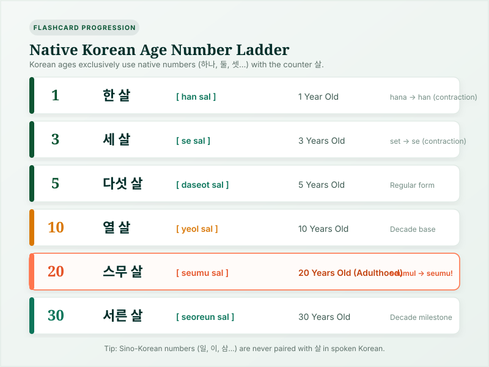
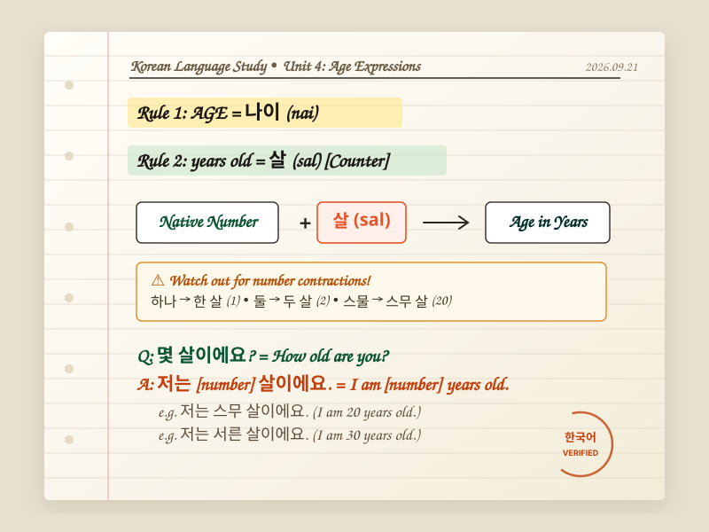

Quick Answer: How Do You Say "Age" in Korean?
When discussing age in the Korean language, two fundamental terms appear in nearly every conversation:
The dictionary noun used when asking about someone's age or referring to age as an abstract concept.
The bound counting word attached directly after a native Korean number to state how many years old someone is.
The standard polite question used in daily life when speaking with peers, classmates, and acquaintances.
In short: 나이 (nai) is the noun for "age," while 살 (sal) is the counting unit for "years old." To state your age, you combine a native Korean number with 살, followed by the polite sentence ending 이에요 (ieyo) or 예요 (yeyo).
What Is "Age" in Korean? Understanding 나이 (nai) and 연세 (yeonse)
The Korean language has two distinct nouns for "age" depending entirely on social hierarchy and respect:
Used for yourself, children, friends, peers, and younger people. It is neutral and has no special honorific connotation.
Used exclusively when asking or speaking about the age of grandparents, elderly relatives, teachers, or senior citizens. Never use this for yourself.
Everyday Sentence Examples with 나이
- 나이가 어떻게 되세요? [na-iga eotteoke doeseyo?] — "What is your age?" (A polite, respectful way to ask an adult peer's age).
- 나이가 몇 살이에요? [na-iga myeot sal-ieyo?] — "What is your age in years?" (A friendly, polite inquiry commonly heard in informal introductions).
- 동갑이에요. [dong-gap-ieyo] — "We are the same age." (Koreans celebrate finding someone born in the same year because it immediately creates comfortable social parity).
The Most Important Word: 살 (sal) as the Age Counter
In Korean grammar, objects and measurements require specific counting words (classifiers). When expressing age, the universal counter is 살 (sal).
Unlike English where you can simply say "I am twenty," Korean requires the counter word attached to the number:
1 year old (Notice 하나 contracts to 한)
10 years old
20 years old (Notice 스물 contracts to 스무)
30 years old
Golden Grammar Rule: 살 must always be paired with Native Korean numbers (한, 두, 세, 네, 다섯...) in spoken conversation. Pairing 살 with Sino-Korean numbers (일, 이, 삼, 사...) is grammatically incorrect.
How to Ask "How Old Are You?" in Korean: Three Politeness Levels
Because Korean speech levels reflect social relationships, age, and context, you should adjust how you ask someone's age based on who you are speaking with:

How Do You Say Your Age in Korean? (Formula & Worked Examples)
Stating your age in Korean follows a clean, predictable sentence template:
Sentence Breakdown:
- 저는 (jeoneun): "I" (humble/polite pronoun 저) + topic particle (는). In casual speech with friends, you can drop this or say 나는 (naneun).
- [Native Number]: The counting number in its modified attributive form (e.g., 스무 for 20, 서른 for 30).
- 살 (sal): The age counter noun meaning "years old."
- 이에요 (ieyo): The polite copula ("to be"). Because 살 ends in a consonant (ㄹ), it takes
이에요.
Common Milestone Examples:
- 18 years old: 저는 열여덟 살이에요. [jeoneun yeol-yeodeolb sal-ieyo]
- 20 years old: 저는 스무 살이에요. [jeoneun seumu sal-ieyo]
- 24 years old: 저는 스물네 살이에요. [jeoneun seumul-ne sal-ieyo]
- 27 years old: 저는 스물일곱 살이에요. [jeoneun seumul-ilgop sal-ieyo]
- 32 years old: 저는 서른두 살이에요. [jeoneun seoreun-du sal-ieyo]
Native Korean Numbers for Age: The Complete 1 to 50 Reference
To state your age accurately, you must know native Korean numbers. When these numbers precede the counter word 살, four single-digit numbers and the decade 20 undergo a slight contraction:
- 하나 (1) → 한 (e.g., 한 살 - 1 year old)
- 둘 (2) → 두 (e.g., 두 살 - 2 years old)
- 셋 (3) → 세 (e.g., 세 살 - 3 years old)
- 넷 (4) → 네 (e.g., 네 살 - 4 years old)
- 스물 (20) → 스무 (e.g., 스무 살 - 20 years old)
| Age (Years) | Spoken Korean Form | Revised Romanization | Phonetic Notes & Contraction |
|---|---|---|---|
| 1 | 한 살 하나 → 한 | han sal | Starts at 1 under traditional counting |
| 2 | 두 살 둘 → 두 | du sal | Used for toddlers |
| 3 | 세 살 셋 → 세 | se sal | Final ㅅ drops before 살 |
| 4 | 네 살 넷 → 네 | ne sal | Final ㅅ drops before 살 |
| 5 | 다섯 살 | daseot sal | Regular uncontracted form |
| 6 | 여섯 살 | yeoseot sal | Elementary school entry age in Korea |
| 7 | 일곱 살 | ilgop sal | First grade school age |
| 8 | 여덟 살 | yeodeol sal | Pronounced [여덜 살] |
| 9 | 아홉 살 | ahop sal | Auspicious milestone year (아홉수) |
| 10 | 열 살 | yeol sal | Decade base: 10 |
| 15 | 열다섯 살 | yeoldaseot sal | Compound: 열 (10) + 다섯 (5) |
| 18 | 열여덟 살 | yeol-yeodeol sal | High school graduation threshold |
| 19 | 열아홉 살 | yeol-ahop sal | Korean legal youth protection milestone |
| 20 | 스무 살 스물 → 스무 | seumu sal | Coming of age milestone (성년의 날) |
| 21 | 스물한 살 하나 → 한 | seumul-han sal | Notice 스물 retains ㄹ when followed by another digit |
| 25 | 스물다섯 살 | seumul-daseot sal | Mid-twenties milestone |
| 30 | 서른 살 | seoreun sal | Decade base: 30 |
| 35 | 서른다섯 살 | seoreun-daseot sal | Mid-thirties milestone |
| 40 | 마흔 살 | maheun sal | Decade base: 40 |
| 50 | 쉰 살 | swin sal | Decade base: 50 |
| 60 | 환갑 / 예순 살 | hwangap / yesun sal | Traditional 60th birthday jubilee (Hwangap) |

Why Do Koreans Ask About Age? (The Cultural Importance of Age in Korea)
In many Western cultures, asking an adult's age shortly after meeting can feel intrusive or socially impolite. In South Korea, however, asking someone's age is often one of the first questions asked during introductions.
Understanding why this happens changes how you perceive the interaction:
- Determining Speech Levels (존댓말 vs 반말): The Korean language features seven verb speech levels. To speak respectfully without offending someone, Koreans need to know whether the other person is older, younger, or the exact same age.
-
Establishing Kinship Titles: In casual friendships, Koreans rarely address older friends by their first name alone. Instead, they use hierarchical kinship titles:
- 형 (Hyeong): Used by males to address an older male.
- 누나 (Noona): Used by males to address an older female.
- 오빠 (Oppa): Used by females to address an older male.
- 언니 (Unnie): Used by females to address an older female.
- Finding "Friends" (동갑 - Donggap): In strict traditional Korean culture, true "friends" (친구 - chingu) are specifically people born in the exact same calendar year. When two people discover they share the same birth year, they often say "우리 친구 하자!" ("Let's be friends!"), instantly dropping formal barriers.
Does "Age in Korean" Mean Korean Age? (Topical Clarification)
Search engines frequently bundle language queries with calendar arithmetic, but learners should recognize the fundamental distinction:
"Age in Korean"
Refers to the Korean words, pronunciations, and grammar patterns used to talk about age (나이, 살, 몇 살이에요?).
You are learning this on this page."Korean Age System"
Refers to the mathematical reckoning method where individuals are 1 year old at birth and gain +1 year on January 1st.
Learn the counting system →
When speaking Korean, you can state either your international legal full age (만 나이) or your traditional cultural age (세는 나이). The grammar structure 저는 ___살이에요 remains exactly identical regardless of which number you choose to state.
Common Mistakes When Expressing Age in Korean
Foreign learners and students frequently stumble on five specific linguistic traps:
Do not say "저는 20 나이예요." The word 나이 is an abstract noun. When stating how many years old you are, you must attach the counter 살 to the number (e.g., 저는 스무 살이에요).
Saying "이십 살" (using Sino-Korean 이십 for 20) is unnatural in spoken Korean. Spoken age strictly requires Native Korean numbers (스무 살). Sino-Korean numbers are only used with the formal written counter 세 (歲) in legal documentation.
The base native word for 20 is 스물 (seumul). When followed directly by the counter 살, the final consonant ㄹ drops: it becomes 스무 살 (seumu sal), not 스물 살.
Asking "몇 살이야?" sounds abrupt and rude if spoken to someone older than you or someone you just met. Always default to the polite 몇 살이에요? or respectful 나이가 어떻게 되세요?.
Hearing someone say "저는 스물일곱 살이에요" tells you their stated number is 27, but it does not automatically specify whether they are using international age (만 나이) or traditional Korean age (세는 나이). In casual social settings, Koreans often follow up with "만 나이예요?" ("Is that full age?") for clarification.
Student Study Notebook: Korean Age Grammar at a Glance
To help you consolidate the grammar formulas, number contractions, and dialogue patterns, here is a snapshot from our language study notebook:

Frequently Asked Questions About Age in Korean
Concise, authoritative answers to the most common queries regarding Korean age vocabulary, pronunciation, and usage:
Explore the Korean Age Knowledge Base
Continue your exploration of East Asian chronology, legal standards, and calculation arithmetic across our specialized guides:
📖 What is Korean Age?
Cultural origins, Confucian hierarchy, East Asian age reckoning, and social etiquette.
Practical Arithmetic🧮 How to Calculate Korean Age
Exact mathematical formula, birthday cutoff mechanics, and step-by-step worked examples.
Comparative Analysis⚖️ Korean Age vs International Age
In-depth side-by-side comparison explaining the +1 vs +2 year differences and calendar timing.
2023 Statutory Reform🏛️ Did Korea Change Its Age System?
The June 28, 2023 Civil Act reform, official full age standard, and remaining exceptions.
Personal Discovery🎯 How Old Am I in Korean Age?
Interactive calculator with Age Difference Meter, birthday presets, and milestone comparisons.
Interactive Utility🇰🇷 Korean Age Calculator (Full Tool)
Full interactive calculator with Baek-il milestones, Zodiac signs, and birth year matrices.